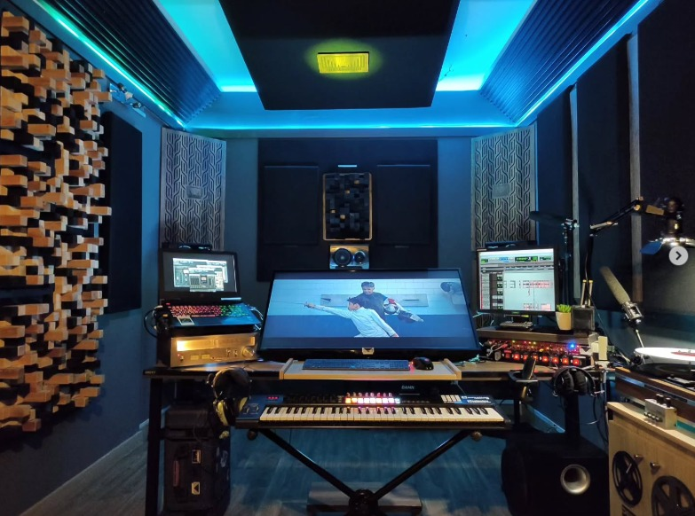
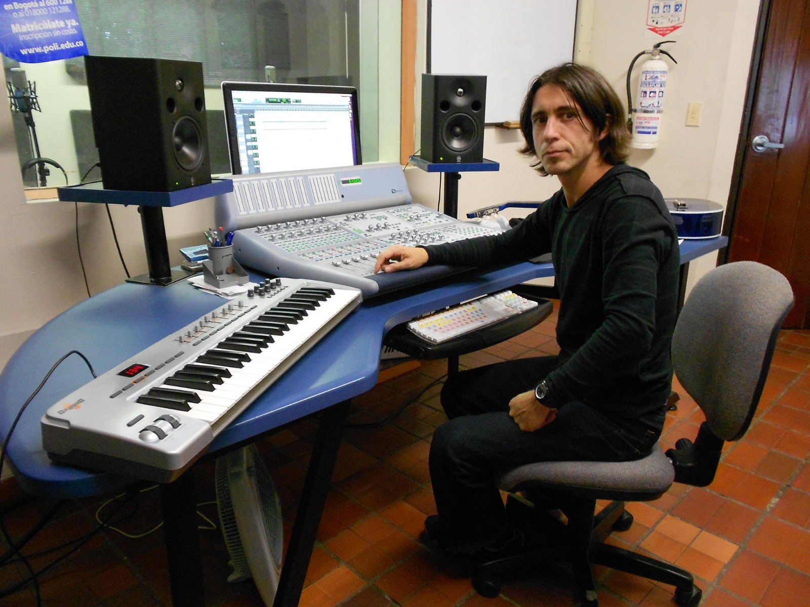
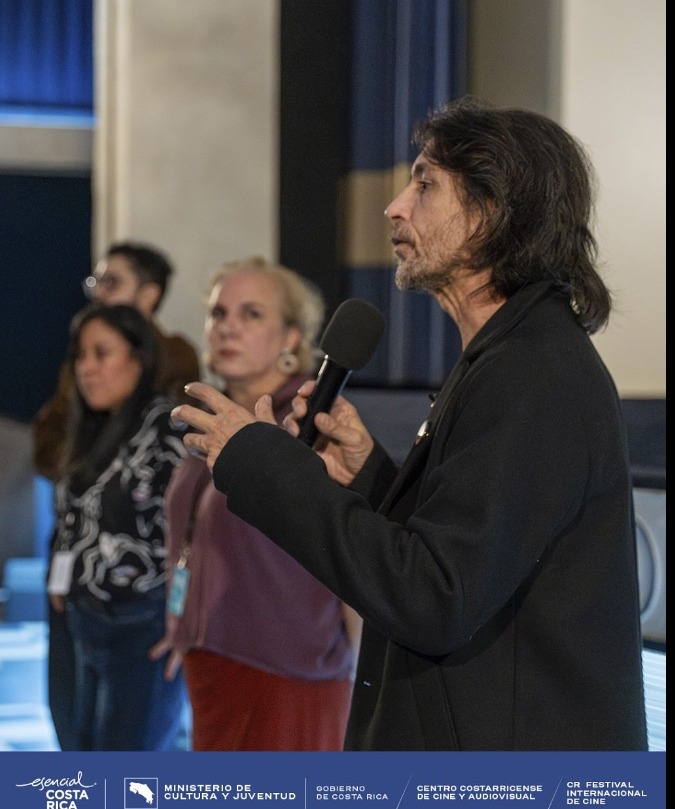
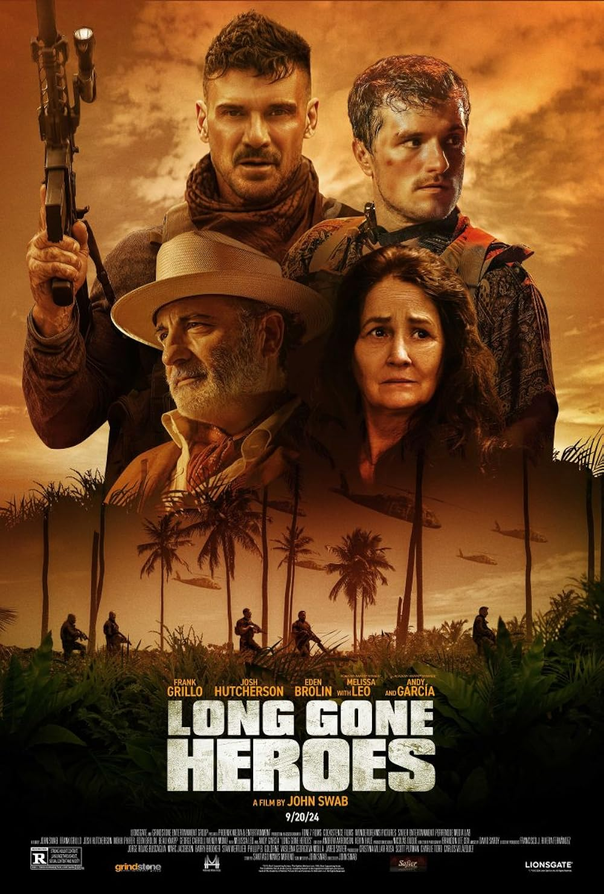
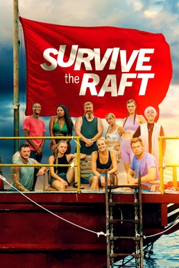
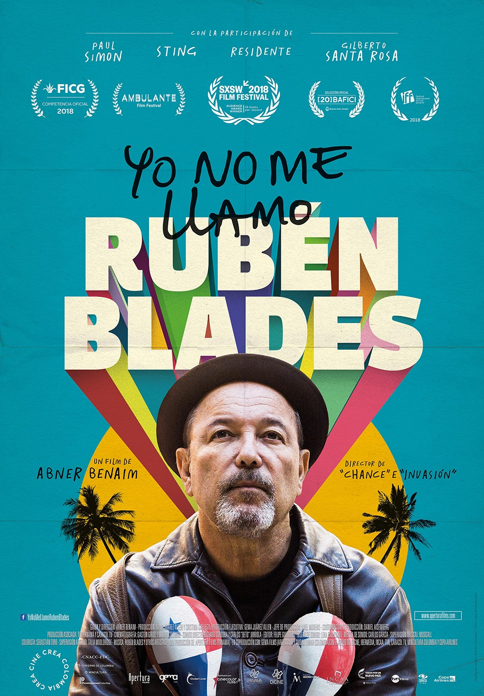

Richard Córdoba
Sound Technology Engineer · Music Technology Expert · Audio Engineer · Film Composer
Music rooted in identity, memory, and cinematic emotion.
I am a Colombian-American sound technology specialist, film composer, sound designer, and music supervisor with extensive experience in professional recording studios, film post-production, music supervision, and advanced DAW workflows. I work professionally with Pro Tools HD, Logic Pro, and Ableton Live, with strong hands-on experience in signal flow, analog console environments, mixing sessions, audio restoration, delivery specs, sync-to-picture, and post-production workflows. My career combines high-level creative composition with technical audio engineering, studio production, location recording, sound design, and final professional delivery for film, documentary, theater, and audiovisual projects. From festival cinema and major documentary productions to live recording sessions and international collaborations, my work bridges artistic storytelling with professional studio execution.
Film Scoring
Original music for fiction, documentary, and character-driven cinema.
Sound Design
Detailed sonic environments shaped through recording, editing, and post-production.
Recording
Live, location, field, and music recording across diverse cultural contexts.
Bioacoustics
Environmental listening, wildlife sound, and ecological sound research.



Creative audio supported by professional studio systems and technical workflows.
I bring together artistic composition and practical audio engineering. My technical skill set includes Pro Tools HD, Logic Pro, Ableton Live, signal flow, analog console experience, mixing sessions, audio restoration, delivery specs, sync-to-picture, and post-production workflows. These are not only general skills; they are part of my professional workflow in studio, film, documentary, and audiovisual production environments.
DAW Production
Advanced workflows in Pro Tools HD, Logic Pro, and Ableton Live for composition, editing, mixing, and final delivery.
Signal Flow
Strong understanding of routing, patching, gain staging, microphones, preamps, converters, and studio signal chains.
Analog Console Experience
Hands-on experience in professional studio environments using analog consoles, outboard gear, and hybrid recording workflows.
Mixing Sessions
Music, film, and documentary mixing experience, including session preparation, balancing, editing, and creative audio decisions.
Audio Restoration
Cleaning, repairing, and improving recorded audio for archival, documentary, music, and post-production needs.
Delivery Specs
Preparation of professional audio deliverables for film, media, online platforms, client review, and final project handoff.
Sync / Post Workflows
Experience with music-to-picture, sound editing, sync, spotting, cue organization, and post-production collaboration.
Field Recording
Location recording, environmental sound capture, documentary audio, and bioacoustic listening for cinema and cultural archives.
Selected work across fiction, documentary, and festival cinema.
A curated selection of projects highlighting composition, sound design, music supervision, field recording, and post-production work.



Festival selections, nominations, and institutional recognition.
A curated overview of important recognitions connected to Richard Córdoba’s work across film, documentary, music, and sound.
Live, location, and field recording for artists, films, and cultural archives.
Classical training, jazz language, cinema, preservation, and sound ecology.
Professional tools and workflows I know and use.
Original music, interviews, videos, and selected public work.
A professional hub for important links. Click any item to open the preview; the previous one closes automatically.
Original Music
La Sombra del Caminante SoundCloud
Requiem Music
Igualada Theme Music
Torrijos Way Theme Music
Video & Features
Sound Design Masterclass YouTube

Composer Feature Session YouTube

Live Performance Session YouTube

Studio Performance Feature YouTube

Jazz Recording Session YouTube

Featured Performance Video YouTube

Press & Extended Library
Sound Design Portfolio Wix
Professional sound design and post-production portfolio featuring selected audio work, sound projects, and production material.
Open PortfolioMiles Davis Wall to Wall — Part 10 SoundCloud
Miles Davis Wall to Wall — Part 11 SoundCloud
Smithsonian Music Event Event
Institutional event and professional recognition connected to music, culture, and audiovisual storytelling.
Open EventMediapart Interview Press
Interview about Richard Córdoba’s cinematic language, musical vision, and creative process.
Read InterviewTheater Music Portfolio Wix
Professional theater music portfolio featuring selected compositions, theater scoring, and production work.
Open PortfolioDocumentary Feature Clip Dailymotion
Additional selected audiovisual material hosted on Dailymotion.
Open VideoSelected Works Playlist YouTube
Extended YouTube playlist with selected public work and audiovisual material.
Open PlaylistFestival Appearance YouTube

Cinematic Performance YouTube

Available for sound technology, studio work, scoring projects, post-production, and music technology consulting.
Explore Richard Córdoba’s music, credits, and professional profile through the links below.
Email: sonidosliquidos@gmail.com
Phone (US): +1 870 805 5162
Phone (Panama): +507 6835 4735